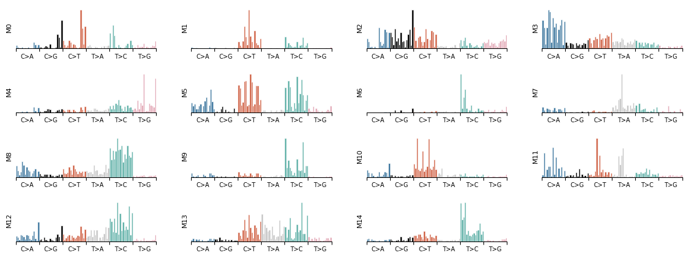
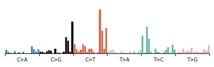
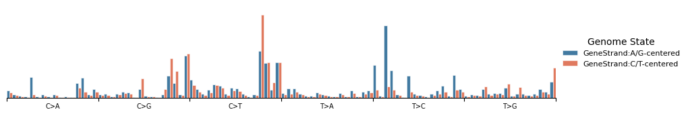
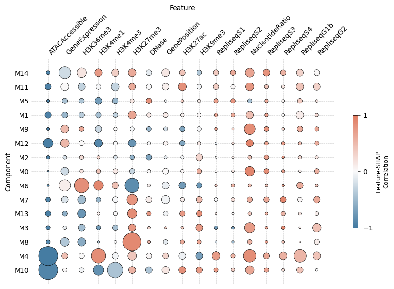
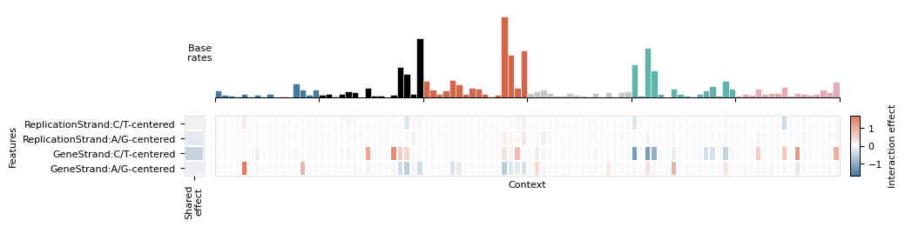
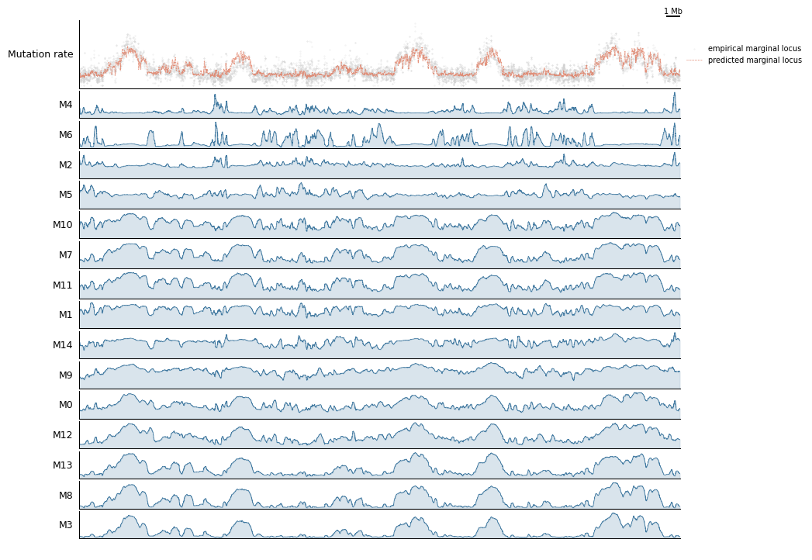
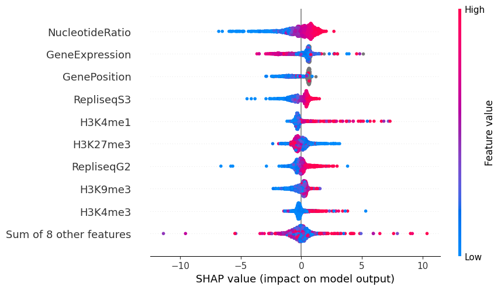

Tutorial 4: Analyzing Topographic Models¶
In this tutorial we explore the results of a trained MuTopia topographic model. We will:
Load a trained model and annotate a G-Tensor with component weights and SHAP values
Visualize mutational signatures (SBS spectra) for each component
Summarize feature importance with SHAP plots
Build genome-browser track views comparing predicted and observed mutation rates
Inspect component interactions with the feature interaction matrix
Prerequisites: Tutorial 3 (Training Models). You should have:
tutorial_data/trained_model.pkl— a trained topographic modeltutorial_data/Liver.nc— the annotated G-Tensor dataset
[1]:
import mutopia.analysis as mu
import mutopia.plot.track_plot as tr
import matplotlib.pyplot as plt
model = mu.load_model('tutorial_data/pretrained_model.pkl')
print(model)
/Users/allen/miniconda3/envs/mutopia-model/lib/python3.12/site-packages/tqdm/auto.py:21: TqdmWarning: IProgress not found. Please update jupyter and ipywidgets. See https://ipywidgets.readthedocs.io/en/stable/user_install.html
from .autonotebook import tqdm as notebook_tqdm
INFO Mutopia JIT-compiling model operations ...
SBSModel(convolution_width=1, eval_every=5, l2_regularization=0.0,
locus_subsample=0.125, max_features=0.5, seed=110, threads=5)
1. Annotate the G-Tensor¶
annot_data runs all annotation steps in one call: component contributions, local variable predictions, marginal mutation rate predictions, and SHAP feature attributions. Set calc_shap=True to also compute SHAP values (takes a few minutes; increase threads to speed it up).
[2]:
data = mu.gt.load_dataset('tutorial_data/Liver.nc', with_samples=False)
data = model.annot_data(data, threads=4, calc_shap=True)
print(data)
INFO Mutopia Setting up dataset state ...
INFO Mutopia Done ...
INFO Mutopia Setting model to prediction mode.
Estimating contributions: 100%|██████████████████████████████████| 185/185 [00:01<00:00, 157.51it/s]
INFO Mutopia Added key to dataset: "contributions"
INFO Mutopia Added keys to dataset: Spectra/spectra, Spectra/interactions, Spectra/shared_effects
INFO Mutopia Calculating SHAP values for M0 ...
INFO Mutopia Calculating SHAP values for M1 ...
INFO Mutopia Calculating SHAP values for M2 ...
INFO Mutopia Calculating SHAP values for M3 ...
20%|==== | 396/2000 [00:22<01:29] IOStream.flush timed out
50%|========== | 1005/2000 [02:00<01:58] INFO Mutopia Calculating SHAP values for M4 ...
51%|========== | 1025/2000 [02:16<02:09] IOStream.flush timed out
89%|================== | 1774/2000 [02:39<00:20] IOStream.flush timed out
54%|=========== | 1074/2000 [02:27<02:06] INFO Mutopia Calculating SHAP values for M5 ...
67%|============= | 1339/2000 [02:11<01:04] INFO Mutopia Calculating SHAP values for M6 ...
71%|============== | 1421/2000 [02:26<00:59] IOStream.flush timed outIOStream.flush timed out
81%|================ | 1613/2000 [02:55<00:41] INFO Mutopia Calculating SHAP values for M7 ...
81%|================ | 1617/2000 [03:10<00:45] IOStream.flush timed out
IOStream.flush timed out
34%|======= | 670/2000 [00:52<01:43] INFO Mutopia Calculating SHAP values for M8 ...
42%|======== | 839/2000 [01:39<02:16] INFO Mutopia Calculating SHAP values for M9 ...
45%|========= | 893/2000 [01:52<02:18] IOStream.flush timed outIOStream.flush timed out
12%|== | 234/2000 [00:12<01:30] IOStream.flush timed out
35%|======= | 708/2000 [01:20<02:25] IOStream.flush timed out
12%|== | 235/2000 [00:23<02:52]
69%|============== | 1380/2000 [03:06<01:23] INFO Mutopia Calculating SHAP values for M10 ...
18%|==== | 354/2000 [00:11<00:51] IOStream.flush timed out
82%|================ | 1646/2000 [04:19<00:55] IOStream.flush timed out
96%|=================== | 1925/2000 [03:10<00:07] IOStream.flush timed out
76%|=============== | 1520/2000 [03:44<01:10] INFO Mutopia Calculating SHAP values for M11 ...
20%|==== | 395/2000 [00:11<00:44] IOStream.flush timed out
IOStream.flush timed out
IOStream.flush timed out
78%|================ | 1551/2000 [04:09<01:12] INFO Mutopia Calculating SHAP values for M12 ...
26%|===== | 522/2000 [00:26<01:13] IOStream.flush timed out
64%|============= | 1276/2000 [01:48<01:01] INFO Mutopia Calculating SHAP values for M13 ...
50%|========== | 1008/2000 [01:28<01:26] IOStream.flush timed out
56%|=========== | 1127/2000 [02:42<02:05] IOStream.flush timed outIOStream.flush timed out
37%|======= | 735/2000 [01:15<02:09] INFO Mutopia Calculating SHAP values for M14 ...
75%|=============== | 1500/2000 [02:57<00:59] IOStream.flush timed out
99%|===================| 1979/2000 [03:25<00:02] INFO Mutopia Added key: "SHAP_values"
INFO Mutopia Added key: "component_distributions"
INFO Mutopia Added key: "component_distributions_locus"
INFO Mutopia Added key: "predicted_marginal"
INFO Mutopia Added key: "predicted_marginal_locus"
Reducing samples: 100%|██████████| 184/184 [00:27<00:00, 6.77it/s]
INFO Mutopia Added key: "empirical_marginal"
INFO Mutopia Added key: "empirical_marginal_locus"
<mutopia.gtensor.interfaces.CorpusInterface object at 0x32d573b50>
2. Visualize Mutational Signatures¶
Each component learns a mutational signature — the probability distribution over SBS trinucleotide contexts. plot_signature_panel shows all components side by side.
[3]:
mu.pl.plot_signature_panel(data)

[4]:
components = mu.gt.list_components(data)
print('Discovered components:', components)
# Zoom into a single component
mu.pl.plot_component(data, components[0])
Discovered components: [np.str_('M0'), np.str_('M1'), np.str_('M2'), np.str_('M3'), np.str_('M4'), np.str_('M5'), np.str_('M6'), np.str_('M7'), np.str_('M8'), np.str_('M9'), np.str_('M10'), np.str_('M11'), np.str_('M12'), np.str_('M13'), np.str_('M14')]
[4]:
<Axes: >

Strand-conditioned signatures¶
Pass a strand feature name to reveal transcriptional or replicational strand asymmetry.
[5]:
mu.pl.plot_component(data, components[0], 'GeneStrand')
[5]:
<Axes: >

3. SHAP Feature Importance¶
SHAP values reveal which genomic features push each locus toward or away from a component. plot_shap_summary produces a beeswarm-style dot-plot: rows are features, color encodes feature value, and horizontal position encodes impact on the log mutation rate.
[6]:
mu.pl.plot_shap_summary(data, scale=40, max_size=20, figsize=(10, 6))
[6]:
<Axes: xlabel='Feature', ylabel='Component'>

[8]:
# Feature interaction matrix for a single component
mu.pl.plot_interaction_matrix(data, components[0])
None

4. Genome-Browser Track Views¶
The track-plot module builds composable genome-browser figures. Here we compare predicted vs observed mutation rates and per-component rates over a 5 Mb window on chr2.
[12]:
view = tr.make_view(data, 'chr2:10000000-55000000')
def config(view, scalebar_bp):
return (
tr.scale_bar(scalebar_bp, scale='mb'),
tr.tracks.plot_marginal_observed_vs_expected(view, pred_smooth=3, smooth=3, height=1.25),
tr.plot_component_rates(view, *tr.order_components(data)),
tr.spacer(0.2),
)
tr.plot_view(config, view, scalebar_bp=1_000_000, width=10)
None
INFO Mutopia Found 6767/388247 regions matching query.

5. Exporting SHAP Explanations¶
SHAP Explanation objects can be retrieved for downstream analysis.
[13]:
import shap
explanation = mu.gt.get_explanation(data, component=components[0])
shap.plots.beeswarm(explanation)

Next steps¶
Tutorial 5: Annotating VCFs — apply the trained model to assign each mutation in a VCF to a component and estimate per-sample signature fractions.
Explore
mu.gt.rename_componentsto give components biologically meaningful names.Try
mu.gt.slice_regionsto focus analysis on a specific gene or locus.